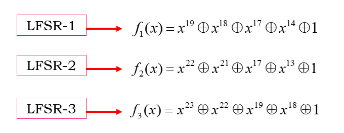
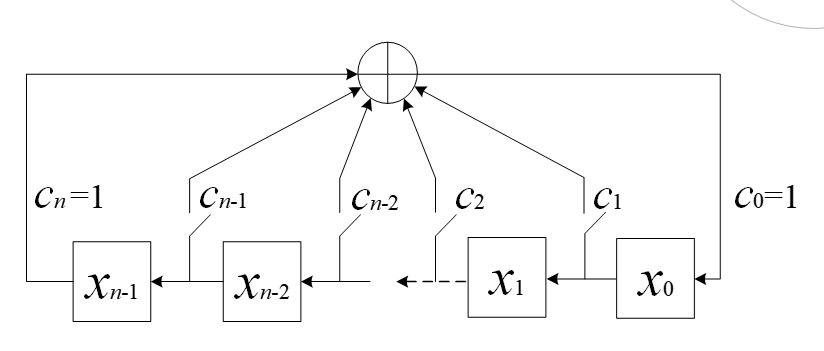
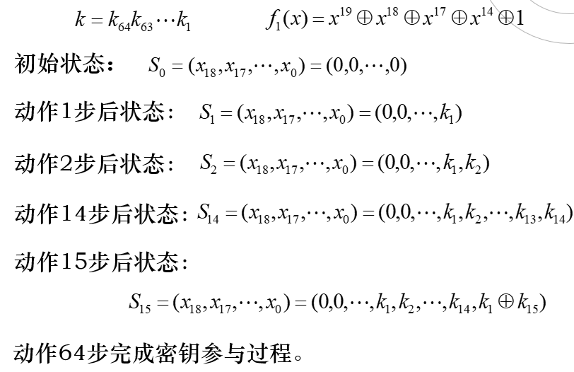
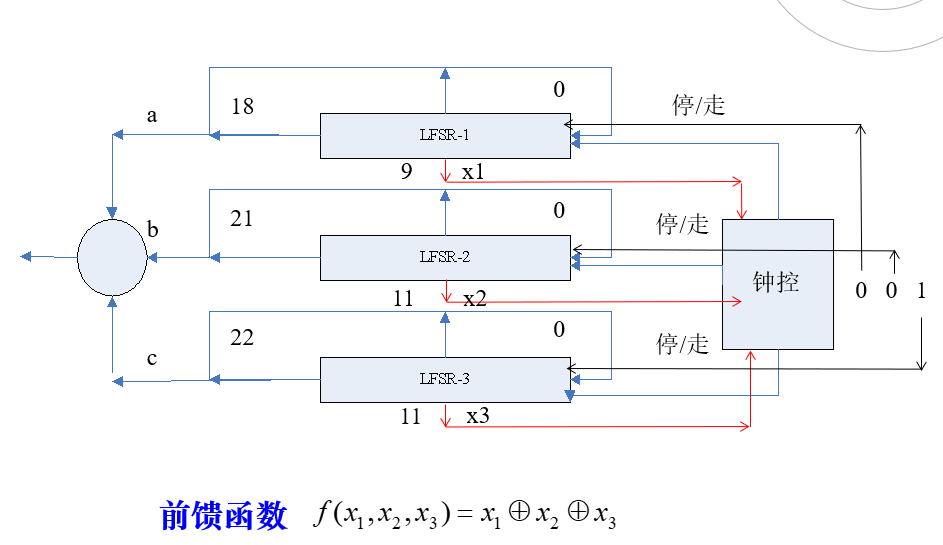
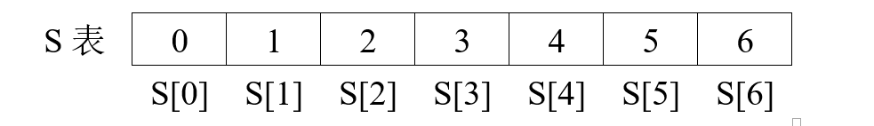
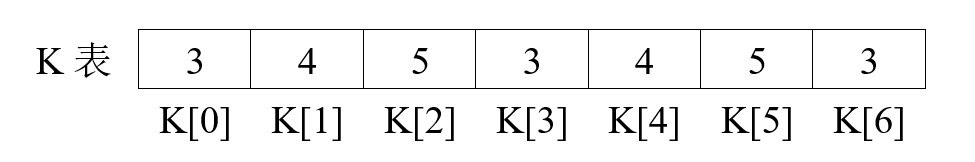
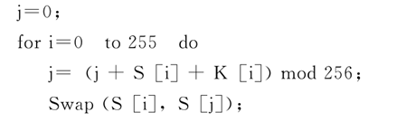
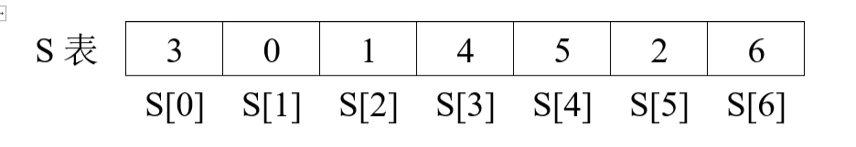
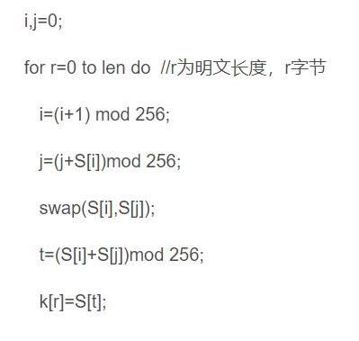

A5-1序列密码
算法描述
1、移存器描述
算法使用3个级数为19、22和23的本原移存器。

注：A5-1算法中，LFSR的移位方式是左移方式。各寄存器的编号从第0级编号到第n-1级。
n级左移LFSR的结构框图：

移存器的左移和右移方式，除移位方式不同外，其工作原理完全相同。
2、算法初始化
初始化是利用一次通话的会话密钥k和帧序号设定三个移存器的起点，即初始状态。
Step 1：将三个LFSR的初态都设置为全零向量；
Step 2：(密钥参与) 三个LFSR都规则动作64次，每次动作1步。在第i步动作时，三个LFSR的反馈内容都首先与密钥的第i比特模2加(即 $f_1(x)$函数的结果与 $k_i$ 异或)，并将模2加结果作为LFSR反馈的内容。（模2加即为异或运算）
以移存器1为例的密钥参与过程：

理解：
以动作16步为例
在15步后 $S_{15} =(0,0…,k_1,k_2,…,K_{14},K_1⊕K_{15})$
根据 $f_1(x) = x_{19}⊕x_{18}⊕x_{17}⊕x_{14}⊕1$,
其中 $x_{19} = 0, x_{18} = 0 , x_{17} = 0, x_{14} = k_2$
所以 $f_1(x) = 0⊕0⊕0⊕k_2 ⊕k_{16}$ = $k_2 ⊕k_{16}$
所以动作16步后的状态：
$S_{15} =(0,0,0,k_1,k_2,…,K_{14},K_1⊕K_{15},k_2 ⊕k_{16})$
Step 3：(帧序号参与) 三个LFSR都规则动作22次，每次动作1步。在第i 步动作时，三个LFSR的反馈内容都首先与帧序号的第i比特模2加，并将模2加的结果作为LFSR反馈的内容；帧序号比特的序号是从最低位编到最高位。
帧序号参与方式：与密钥参与方式相同，不同的明文数据帧按顺序编号，每个编号为22比特。

帧密钥参与的目的：对不同的帧设置不同的帧会话密钥，保证对每帧以不同的起点生成乱数，尽可能避免密钥重用。
3、乱数生成与加脱密
A5算法中，LFSR的不规则动作采用钟控方式。
钟控信号 $x_1 x_2 x_3$ 的采取： $x_1$ 取自LFSR-1第9级；
$x_2$ 取自LFSR-2第11级； $x_3$ 取自LFSR-3第11级 。
控制方式：择多原则。
| (X1,X2,X3) | 000 | 001 | 010 | 011 | 100 | 101 | 110 | 111 |
|---|---|---|---|---|---|---|---|---|
| LFSR-1 | 动 | 动 | 动 | 不动 | 不动 | 动 | 动 | 动 |
| LFSR-2 | 动 | 动 | 不动 | 动 | 动 | 不动 | 动 | 动 |
| LFSR-3 | 动 | 动 | 动 | 动 | 动 | 不动 | 动 |
关于加密
Step 4：三个LFSR以钟控方式连续动作100次，但不输出乱数；
Step 5：三个LFSR以钟控方式连续动作114次，在每次动作后，三个LFSR都将最高级寄存器中的值输出，这三个比特的模2和就是当前时刻输出的1比特乱数。
连续动作114步，共输出114比特乱数，用于对用户手机到基站传送的114比特数据的加密；
关于脱密
Step 6：三个LFSR以钟控方式连续动作100次，但不输出乱数；
Step 7：三个LFSR以钟控方式连续动作114次，在每次动作后，三个LFSR都将最高级寄存器中的值输出，这三个比特的模2和就是当前时刻输出的1比特乱数。
连续动作114步，共输出114比特乱数，这114比特用于对基站到用户手机传送的114比特数据的脱密。
A5-1算法的结构框图

代码实现
import re
def createkey(key,Fn):
tem = strtobin(key)
# 线性反馈移位寄存器LFSR A,B,C
A = list(tem[:19])
B = list(tem[19:41])
C = list(tem[41:])
res = []
for i in range(114):
resa = int(A[13]) ^ int(A[16]) ^ int(A[17]) ^ int(A[18])
resb = int(B[12]) ^ int(A[16]) ^ int(B[20]) ^ int(B[21])
resc = int(C[17]) ^ int(C[18]) ^ int(C[21]) ^ int(C[22])
if int(A[9]) ^ int(B[11]) ^ int(C[11]) == 1:
if A[9] == '1' and B[11] == '1':
A[1: 18] = A[0: 17]
A[0] = str(resa)
B[1: 21] = B[0: 20]
B[0] = str(resb)
elif A[9] == '1' and C[11] == '1':
A[1: 18] = A[0: 17]
A[0] = str(resa)
C[1: 22] = C[0: 21]
C[0] = str(resc)
else:
B[1: 21] = B[0: 20]
B[0] = str(resb)
C[1: 22] = C[0: 21]
C[0] = str(resc)
else:
if A[9] == '0' and B[11] == '0':
A[1: 18] = A[0: 17]
A[0] = str(resa)
B[1: 21] = B[0: 20]
B[0] = str(resb)
elif A[9] == '0' and C[11] == '0':
A[1: 18] = A[0: 17]
A[0] = str(resa)
C[1: 22] = C[0: 21]
C[0] = str(resc)
else:
B[1: 21] = B[0: 20]
B[0] = str(resb)
C[1: 22] = C[0: 21]
C[0] = str(resc)
res.append(int(A[18]) ^ int(B[21]) ^ int(C[22]))
Fn = list(Fn)
for i in range(22):
B[i] = int(B[i]) ^ int(Fn[i])
for i in range(114):
resa = int(A[13]) ^ int(A[16]) ^ int(A[17]) ^ int(A[18])
resb = int(B[12]) ^ int(A[16]) ^ int(B[20]) ^ int(B[21])
resc = int(C[17]) ^ int(C[18]) ^ int(C[21]) ^ int(C[22])
if int(A[9]) ^ int(B[11]) ^ int(C[11]) == 1:
if A[9] == '1' and B[11] == '1':
A[1: 18] = A[0: 17]
A[0] = str(resa)
B[1: 21] = B[0: 20]
B[0] = str(resb)
elif A[9] == '1' and C[11] == '1':
A[1: 18] = A[0: 17]
A[0] = str(resa)
C[1: 22] = C[0: 21]
C[0] = str(resc)
else:
B[1: 21] = B[0: 20]
B[0] = str(resb)
C[1: 22] = C[0: 21]
C[0] = str(resc)
else:
if A[9] == '0' and B[11] == '0':
A[1: 18] = A[0: 17]
A[0] = str(resa)
B[1: 21] = B[0: 20]
B[0] = str(resb)
elif A[9] == '0' and C[11] == '0':
A[1: 18] = A[0: 17]
A[0] = str(resa)
C[1: 22] = C[0: 21]
C[0] = str(resc)
else:
B[1: 21] = B[0: 20]
B[0] = str(resb)
C[1: 22] = C[0: 21]
C[0] = str(resc)
res.append(int(A[18]) ^ int(B[21]) ^ int(C[22]))
return res
# 字符串转换为二进制字符串
def strtobin(s):
res = []
for c in s:
tem = bin(ord(c)).replace('b', '')
# 转为字符串时，后7位中，如果存在前面为0，会自动去掉，需要加回来，使之满足8位
if len(tem) < 8:
tem = "0" + tem
res.append(tem)
return ''.join(res)
# 二进制转字符串
def bintostr(s):
tem = ""
for i in s:
tem += str(chr(int(i, base=2)))
return tem
# 将明文字符串分割为指定长度字符串并存于列表中
def cut_text(text, lenth):
tem = re.findall('.{' + str(lenth) + '}', text)
tem.append(text[(len(tem) * lenth):])
# 由于分割后，末尾出现一个空字符，故去掉
result = [i for i in tem if i != '']
return result
if __name__ == "__main__":
# 明文
plaintext = "ifnottothesunforsmilingwarmisstillinthesuntherebutwewilllaughmoreconfidentcalmifturnedtofoundhisownshadowappropriateescapethesunwillbethroughtheheartwarmeachplacebehindthecornerifanoutstretchedpalmcannotfallbutterflythenclenchedwavingarmsgivenpowerificanthavebrightsmileitwillfacetothesunshineandsunshinesmiletogetherinfullbloom"
# 秘钥
key = "asdfghjk"
# 转换成二进制
mtext = strtobin(plaintext)
key = strtobin(key)
# 帧号码Fn 22位
Fn = "0101101000110101010101"
# 生成密钥流
keystream = createkey(key, Fn)
# 加密
mlist = cut_text(mtext, 228)
ciphertext = ""
for t in mlist:
# 对每组明文分别加密
for i in range(len(t)):
ciphertext += str(int(keystream[i]) ^ int(t[i]))
print("加密后得到的密文为： \n" + hex(int(ciphertext,2)).upper()[2:])
# 解密
clist = cut_text(ciphertext, 228)
res = ""
for t in clist:
for i in range(len(t)):
res += str(int(keystream[i]) ^ int(t[i]))
result = cut_text(res, 8)
end = bintostr(result)
print("解密后得到的明文为： \n" + end)
RC4序列密码
基本原理
RC4属于对称密码算法中的流密码加密算法。 密钥⻓度可变，⾯向字节操作。 它以⼀个⾜够⼤的表S为基础，对表进⾏⾮线性变换，产⽣密钥流。
明文 ⊕ 密钥 ——> 密文
密文 ⊕ 密钥 ——> 明文
加密方式：m+K=c（以字节为单位，按位异或）
加密过程
⼀、初始化S表
Step1:对S表进⾏线性填充（0-255），⼀般为256个字节；
以 7 字节为例

Step2:⽤种⼦密钥填充另⼀个256字节的K表；（不够则重复填充直到填满）
假设种子密钥为 345

Step3:⽤K表对S表进⾏初始置换。
即 $从S_0 开始到 S_{255} ,对每个S_i根据 K_i 确定的一个方案，将S_i置换为S中的另一个字节$
例如这个算法：

置换后

⼆、密钥流的⽣成
为每个待加密的字节⽣成⼀个伪随机数，⽤来异或。注：表S⼀旦完成初始化，种⼦密钥就不再被使⽤。
密钥流生成算法伪代码：

根据上面置换后的S表和密钥流生成算法 $$ i = (i+1) mod\ 7=0+1=1; $$
$$ j = (j+S[i])mod\ 7 =0+S[1]=0+0=0; $$
$$ Swap(S[0],S[1]) $$
$$ t =S[0]+S[1]mod\ 7=3; $$
$$ S[3]=4; $$
$$ K[0]=S[3]=4 $$
RC4目前使用在：
SSL（安全套接字）中广泛使用
WEP(Wired Equivalent Privacy:有线对等保密) IEEE802.11(http://biz.chinabyte.com/159/2027659_1.shtml)
代码实现
#encoding = utf-8
import random
# 初始化向量 S
def init_S():
global S
for i in range(256):
S.append(i)
# 初始化向量 T
def init_T():
global Key,T
keylen = random.randint(1,256)
for i in range(keylen):
index = random.randint(0,61) #获取随机的临时密钥Key
Key.append(WordList[index])
for i in range(256):
tmp = Key[i % keylen] #初始化向量T
T.append(tmp)
# 初始置换 S[i]
def swap_S():
global S,T
j = 0
for i in range(256):
j = (j+S[i]+ord(T[i])) % 256
tmp = S[i]
S[i] = S[j]
S[j] = tmp
# 密钥流生成
def Get_KeyStream():
global S,text,KeyStream
txtlen = len(text)
j,t = 0,0
for i in range(txtlen):
i = i % 256
j = (j+S[i]) % 256
tmp = S[i]
S[i] = S[j]
S[j] = tmp
t = (S[i] + S[j]) % 256
KeyStream.append(S[t])
# 加密 & 解密
def Get_code():
global PlainText,CryptoText,KeyStream,text
for i in range(len(text)):
CryptoText += chr(ord(text[i]) ^ KeyStream[i]) # 加密
for i in range(len(text)):
PlainText += chr(ord(CryptoText[i]) ^ KeyStream[i]) # 解密
print('''[+]=================开始加密==================''')
print("[+]你的密文---------->",CryptoText)
print('''[+]=================开始解密==================''')
print("[+]你的明文---------->",PlainText)
if __name__ == '__main__' :
T,S,Key = [],[],[]
PlainText,CryptoText,KeyStream = '','',[]
WordList = "ABCDEFGHIJKLMNOPQRSTUVWXYZabcdefghijklmnopqrstuvwxyz0123456789" # 用于生成临时密钥 Key
print('''
——————— ———————— ——————
| —— \ / _____| / | |
| |__) | | / / —— | |
| __ / | | / |_| | | ^__^ is easy ~, that right ?
| | \ \ | |_____ |______| |
|__| \__\ \________| |_|
██████╗ ██████╗██╗ ██╗ ███╗ ███╗ ██╗███████╗ ███████╗ █████╗ ███████╗██╗ ██╗
██╔══██╗██╔════╝██║ ██║ ██╔██╗ ██╔██╗ ██║██╔════╝ ██╔════╝██╔══██╗██╔════╝╚██╗ ██╔╝
██████╔╝██║ ███████║ ╚═╝╚═╝ ╚═╝╚═╝ ██║███████╗ █████╗ ███████║███████╗ ╚████╔╝
██╔══██╗██║ ╚════██║ ██║╚════██║ ██╔══╝ ██╔══██║╚════██║ ╚██╔╝
██║ ██║╚██████╗ ██║ ███████╗ ██║███████║ ███████╗██║ ██║███████║ ██║
╚═╝ ╚═╝ ╚═════╝ ╚═╝ ╚══════╝ ╚═╝╚══════╝ ╚══════╝╚═╝ ╚═╝╚══════╝ ╚═╝
''')
text = input("[+]please input you Plaintext here : ")
init_S()
init_T()
swap_S()
Get_KeyStream()
Get_code()